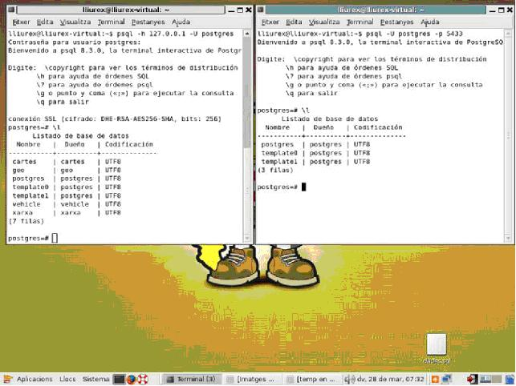
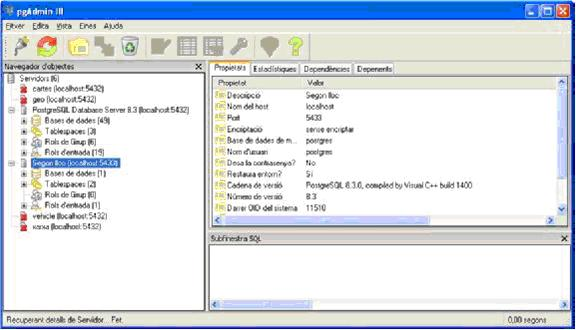

5.4 Lugares alternativos
De momento nada más tenemos creada una Base de Datos (de las
grandes, la súper Base de Datos, o con palabras técnicas el Database Cluster).
Se creó en el momento de la instalación de PostgreSQL, y no especificamos donde
se debía guardar. El lugar por defecto, si instalamos por paquetes Ubuntu, es /var/lib/postgresql/9.1/main, aunque otro lugar
habitual es /var/lib/posgres/data (hay una variable de
entorno, PGDATA, que contiene la ruta ).En Windows es C:\Archivos de Programa\PostgreSQL\9.1\data
Pero ya hemos visto, en el momento de instalar PostgreSQL a mano,
que en la sintaxis de la sentencia de creación podemos especificar otro lugar
para una Base de Datos. Vamos a ver este proceso. Intentaremos hacerlo en Linux
y en Windows (para que cada uno elija el que quiera), aunque la explicación más
larga estará en Linux. Al final tendremos dos clusteres en marcha, es decir dos
grandes Bases de Datos, como si fueran dos servidores en marcha.
Abrimos
una consola, y nos conectamos como posgres con la opción – para a que coja el
entorno de este usuario (quizá nos toque hacerlo desde root):
Linux
Windows
sudo su - posgres >
runas /user:postgres cmd
Inicializamos el nuevo lugar. Podemos colocarlo donde vulguem,
nada más debemos controlar que el directorio padre de esta ruta
(/var/lib/postgresql/8.3 en el ejemplo siguiente) debe existir y debe poder escribir el usuario
posgres. El subdirectorio (main2) se creará durante el proceso, así como toda la estructura interna.
Linux
cd /usr/lib/postgresql/8.3/bin
$ ./initdb
/var/lib/postgresql/8.3/main2
Windows
cd "\Archivos de
Programa\PostgreSQL\8.3\bin"
initdb ../data2
podría darse el caso de que el usuario no tuviera permiso de
escritura
sobre el directorio que estamos indicando. Si es así, podemos dar
permiso
al de S.O posgres sobre el
directorio raíz de PostgreSQL. O
si no queremos complicarnos la vida creamos el nuevo lugar en un
directorio donde
seguro tendremos permiso, por ejemplo C: emp\data2
initdb /temp/data2
Si todo ha ido bien nos avisará que ya está creado y como ponerlo
en marcha. Nada más tendremos en cuenta una cosa: si el anterior cluster (lo
que estamos utilizando durante todo el curso) está en marcha, y queremos a que
lo esté, deberemos cuidar de poner el nuevo en otro puerto. Normalmente el ya
existente estará en el puerto 5432. Por ejemplo podríamos utilizar para el
nuevo el 5433. Podemos utilizar para ponerlo en marcha las maneras que viéramos
en el punto 2 donde se especifique cuál es el lugar (y también el puerto). Es
decir postmaster o pg_ctl.
Linux
posgres -D
/var/lib/postgresql/8.3/main2 -p
5433
Windows
Dependiendo
donde la habíamos habíamos haremos:
posgres -D ../data2
-p 5433
O bien
posgres -D
/temp/data2 -p 5433
De esta manera está en marcha en esta terminal. Cuando cerramos la terminal o hacemos ctrl-c,
pararemos esta Base de Datos. Podríamos hacerlo en segundo plano, ponerlo en marcha nada más arrancar, ...
Aquí tenemos todo lo que hemos hecho en Linux (en Windows debería
salir de forma similar), resaltando en negrita los comandos escritos. Fijaos
que si al poner en marcha la Base de Datos no especificamos el puerto, entonces
se percatará que ya está ocupado
lliurex@lliurex-virtual:~$
sudo
su - posgres
Password:
postgres@lliurex-virtual:~$
cd
/usr/lib/postgresql/9.1/bin/
postgres@lliurex-virtual:/usr/lib/postgresql/8.3/bin$
./initdb /var/lib/postgresql/9.1/main2
Los
archivos de este cluster serán de propropiedad del usuario «posgres».
Este
usuario también debe ser quien ejecute el proceso servidor.
El
cluster será inicializado cono configuración local qcv_ES.UTF-8.
La
codificación miedo omisión ha sido miedo lo tanto definida a UTF8.
initdb:
no se pudo encontrar una configuración para búsqueda en texto apropiada
para
la configuración local qcv_ES.UTF-8
La
configuración de búsqueda en texto ha sido definida a «simple».
creando
el directorio /var/lib/postgresql/8.3/main2 ... hecho
creando
subdirectorios ... hecho
seleccionando
el valor para max_connections ... 100
seleccionando
el valor para shared_bufferes/max_fsm_campesino ... 24MB/153600
creando
archivos de configuración ... hecho
creando
base de datos template1 en /var/lib/postgresql/8.3/main2/base/1 ... hecho
inicializando
pg_authid ... hecho
inicializando
dependencias ... hecho
creando
laso vistas de sistema ... hecho
cargando
laso descripciones de los objetos del sistema ... hecho
creando
conversiones ... hecho
creando
directorios ... hecho
estableciendo
privilegios en objetos predefinidos ... hecho
creando
el esquema de información ... hecho
haciendo
vacuum a la base de datos template1 ... hecho
copiando
template1 a template0 ... hecho
copiando
template1 a posgres ... hecho
ATENCIÓN:
activando autentificación «trust» para conexiones locales.
Puede
cambiar esto editando pg_hba.conf o usando el parámetro -A
la
próxima vez que ejecute initdb.
Completado.
Puede iniciar el servidor de bases de datos usando:
./posgres
-D /var/lib/postgresql/8.3/main2
o
./pg_ctl
-D /var/lib/postgresql/8.3/main2 -l archivo_de_registro start
postgres@lliurex-virtual:/usr/lib/postgresql/8.3/bin$
./posgres
-D
/var/lib/postgresql/8.3/main2 -p 5432
LOG:
no se pudo enlazar al socket IPv4: La dirección ya está en uso
HINT:
¿Hay otro postmaster corriendo en el puerto 5432? Si no, aguarde unos segundos
y
reintento.
WARNING:
no se pudo crear el socket de escucha para «localhost»
FATAL:
no se pudo crear ningún socket TCP/IP
postgres@lliurex-virtual:/usr/lib/postgresql/8.3/bin$
./posgres -D
/var/lib/postgresql/8.3/main2 -p 5433
LOG:
el sistema de bases de datos fue apagado en 2008-03-28 07:09:45 CET
LOG:
lanzador de autovacuum iniciado
LOG:
el sistema de bases de datos está listo para aceptar conexiones
A continuación hay una imagen donde se ven dos terminales con dos conexiones a los dos clusteres en marcha. Nos conectamos como posgres en los dos, pero observa como las Bases de Datos no son las mismas.

Y ahora otra imagen del PgAdmin (en esta ocasión en Windows) donde
se ha creado una conexión al segundo lugar (al puerto 5433). Observáis que el
número de objetos (Base de Datos, Roles, Tablespaces, ...) son diferentes.
